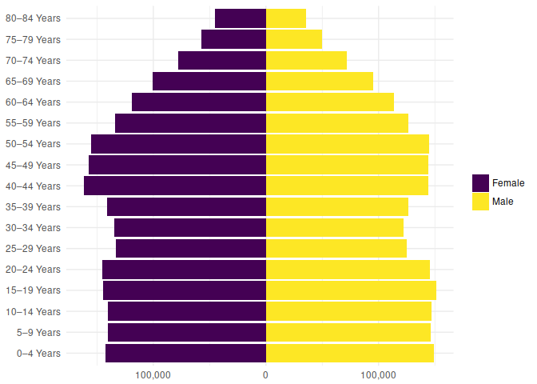

The nzcensus2013 R package contains a single dataset, nzcensus2013, of all the data in the spreadsheet file of summary statistics from the 2013 New Zealand Census, published by Statistics New Zealand.
This package is not associated with the New Zealand government.
The data was extracted from the spreadsheet by using the tidyxl and unpivotr packages, after first converting the .xls file to the .xlsx format. See the script data-raw/extract.R.
A similar package, nzcensus, wraps the finer-grained meshblock-level data. An advantage of the aggregate data in nzcensus2013 is that certain totals and aggregations have been performed by Stats NZ themselves, before random rounding, so that they are more accurate than home-brewed aggregations on the randomly-rounded meshblock data. The meshblock data in nzcensus has many advantages, too, so … horses for courses.
You can install nzcensus2013 from github with:
# install.packages("devtools")
devtools::install_github("nacnudus/nzcensus2013")library(nzcensus2013)
suppressPackageStartupMessages(library(tidyverse))
library(stringr)
suppressPackageStartupMessages(library(scales))
library(naturalsort)
plotdata <-
nzcensus2013 %>%
filter(title == "Age group and sex",
dimensions == "By general electorate",
population == "For the census usually resident population count",
col_header1 == "Sex",
row_header1 == "Age group and general electorate",
row_header2 == "Total New Zealand",
str_detect(row_header3, "Years$")) %>%
select(sex = col_header2, age = row_header3, population = value) %>%
mutate(population = if_else(sex == "Male", population, -population),
age = as_factor(age, naturalsort(unique(age))))
plotdata %>%
ggplot(aes(age, population, fill = sex)) +
geom_bar(stat = "identity") +
coord_flip() +
scale_fill_viridis_d(name = "") +
scale_y_continuous(labels = function(x) comma(abs(x))) +
theme_minimal() +
theme(axis.title.x = element_blank(),
axis.title.y = element_blank())